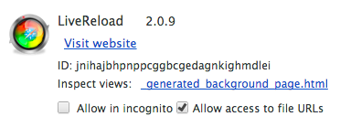
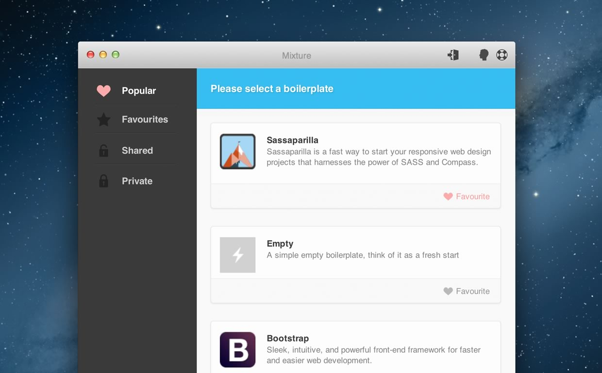
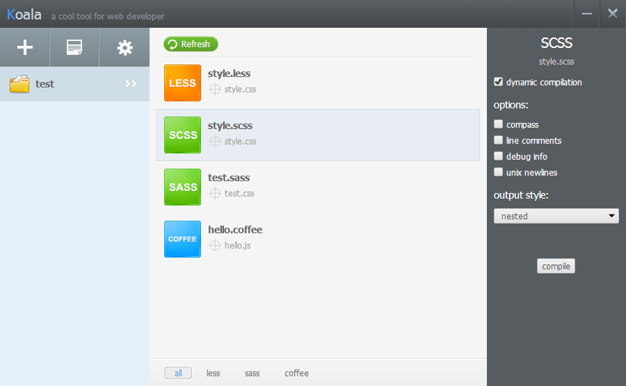

Live Browser Reloading
Make front end development easier
Your typical web dev flow might go something like this…
-
Write some
codein your text editor of choice - Switch to your browser window and reload the page
- Switch back to your text editor and repeat the process
Let's make that process easier
Demo time!
The quick and free way
You will need:
- Sublime Text with Sublime Package Control installed
- Chrome or Firefox
- The LiveReload browser extension
Let's begin
- In Sublime: ⌘ + Shift + P
- Type “install” and hit enter on “Package Control: Install Package”
- To install the LiveReload package, simply type “livereload” and hit enter
- After a few seconds the package should install
A few tips
- LiveReload toolbar button is located in the toolbar in Chrome, and in the Add-on Toolbar in Firefox (at the bottom).
- The icon indicates LiveReload status of the current tab (unavailable / disabled / enabled).
- Chrome: If you want to use it with local files, be sure to enable “Allow access to file URLs” checkbox in Tools > Extensions > LiveReload after installation. 
Other methods
LiveReload
“CSS edits and image changes apply live. CoffeeScript, SASS, LESS and others just work.”
For Mac — $9.99 & Windows alpha — Free

CodeKit
“It’s like steroids for web developers.”
Mac only — $25

Compass App
“Compass.app is a menubar only app for Sass and Compass. It helps designers compile stylesheets easily without resorting to command line interface.”
All platforms — $10
Scout
“Scout is a cross-platform app that delivers the power of Sass & Compass into the hands of web designers.”
Mac & Windows — Free

Mixture
“A rapid prototyping and static site generation tool for designers and developers”
Mac & Windows — Free
Koala
“Koala is a GUI application for Less, Sass, Compass and CoffeeScript compilation, to help web developers to use them more efficient. Koala can run in windows, linux and mac.”
